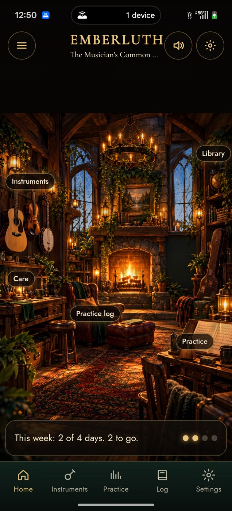
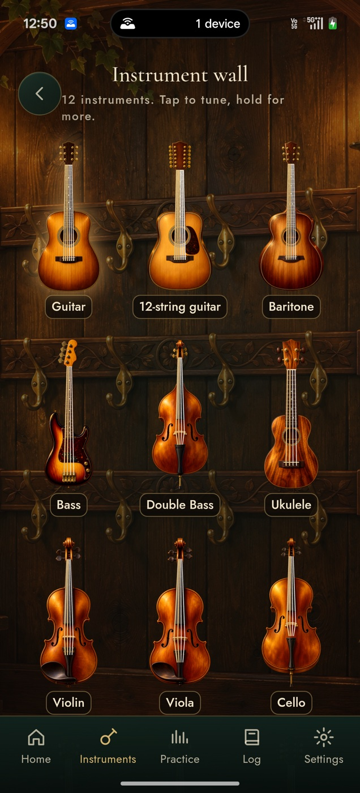
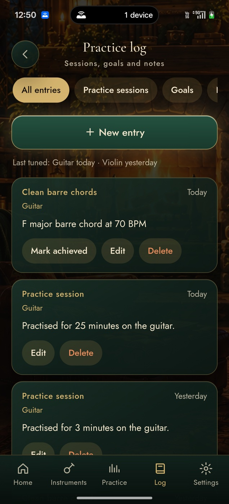
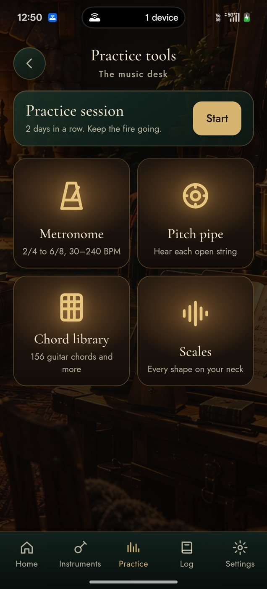
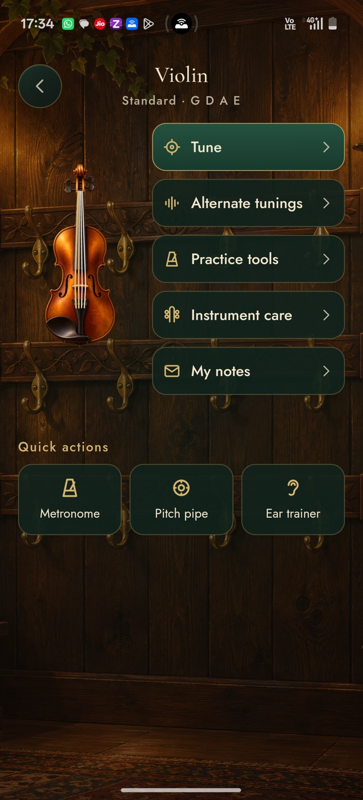
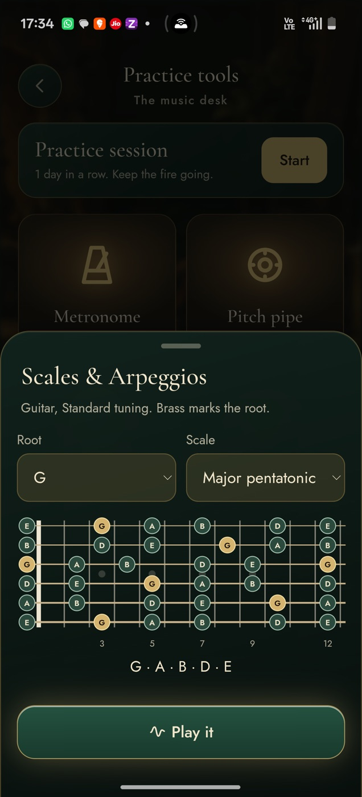
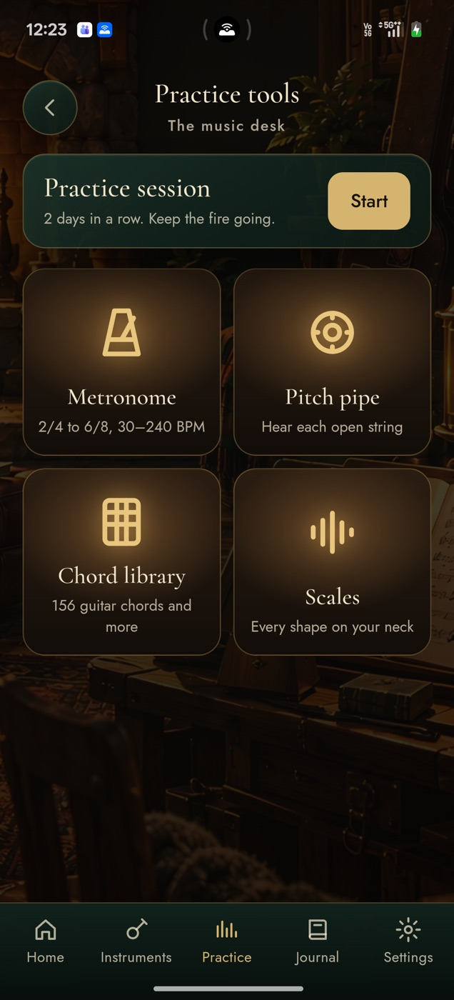
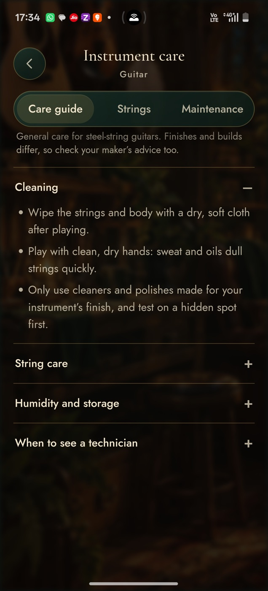

A room that lives while you play
The fire breathes and throws embers, every candle flickers on its own, rain or snow taps the windows and the light follows your day. Tap what you want: the instrument wall, the music stand, the library or the hearth.

The common room
The fire burns brighter on the days you play, and roars when you meet your weekly goal.

The instrument wall
Tap an instrument to tune it. Hold it for its tunings, care and notes.

The practice log
Sessions from your timer, goals and notes, all kept on your phone.

The music stand
Metronome, pitch pipe, chords and scales, with a session timer.
Twelve instruments, 85 tunings
Guitar, 12-string, baritone, bass, double bass, ukulele, violin, viola, cello, banjo, tenor banjo and mandolin, each painted with strings that ring when you touch them. The tuner shows which string you played, how far off it is and which way to turn the peg, with a soft chime the moment it is in tune.
Everything a string player needs

Every instrument
Tune it, change its tuning, look after it and keep its notes.

Scales on the neck
Eleven scales and arpeggios on any of the twelve instruments.

Practice tools
A session timer, metronome, pitch pipe, chords and scales in one place.

Instrument care
Care guides, string-change records and notes for each instrument.
Tune
- Auto, manual and chromatic modes
- Fine mode, in tune at ±2 cents
- Headstock view shows which peg to turn
- Reference pitch from 415 to 466 Hz
- Custom tunings and a left-handed layout
Practise
- Metronome from 30 to 240 BPM
- Pitch pipe and 156 guitar chords
- Eleven scales and arpeggios on any instrument's neck
- A practice timer that logs your sessions
Prepare
- A practice log that fills itself from your timer
- Goals, and a fire that burns by how often you play
- String-change history per instrument
- Care guides for each instrument family
Private by design
The tuner analyses sound as you play. Nothing is recorded, stored or sent anywhere.
No sign-in, no ads, no analytics. Your practice log, notes and settings never leave your phone.
Everything, including the room, its sounds and its art, is inside the app.